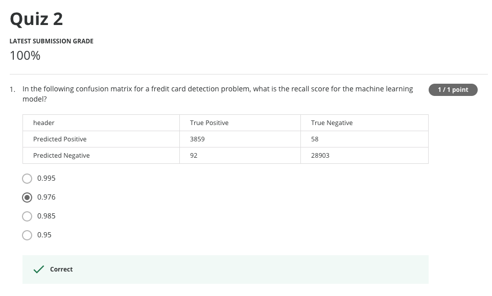
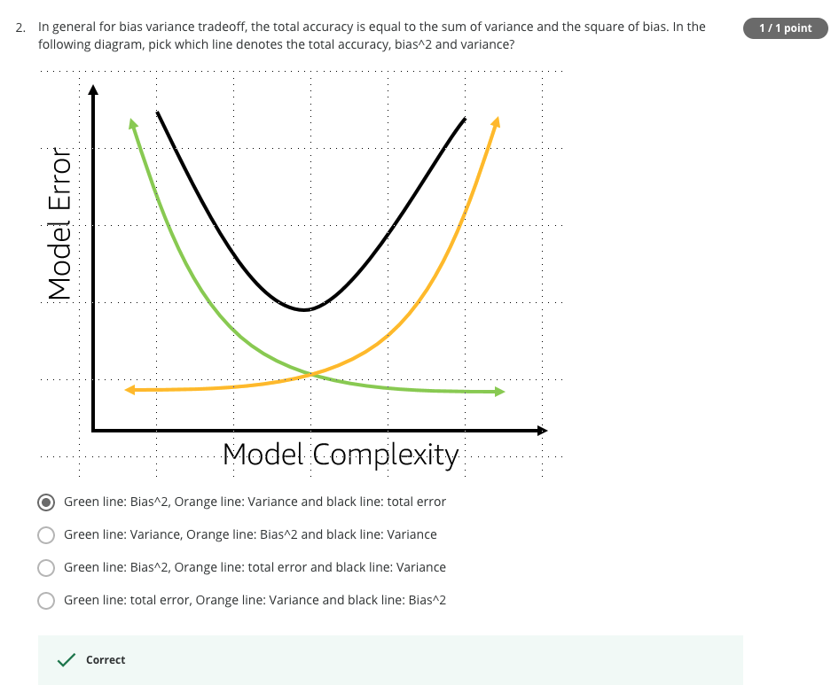

 
1.
Precison = TP / (TP + FP) ==> precision has all Ps
Recall = TP / (TP + FN)
2. Initially the model is high biased. When we increase
the model complexity, the model will fit better the training
data will have more variance.
decreasing curve is bias**2
increasing curve is variance
U shaped curve is total error.